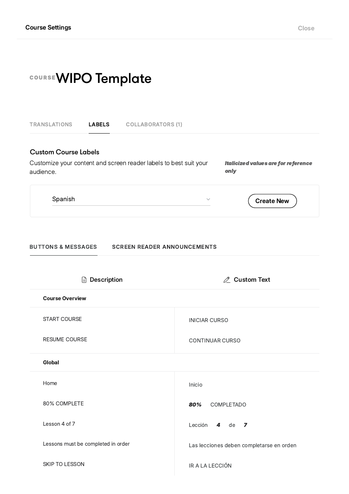
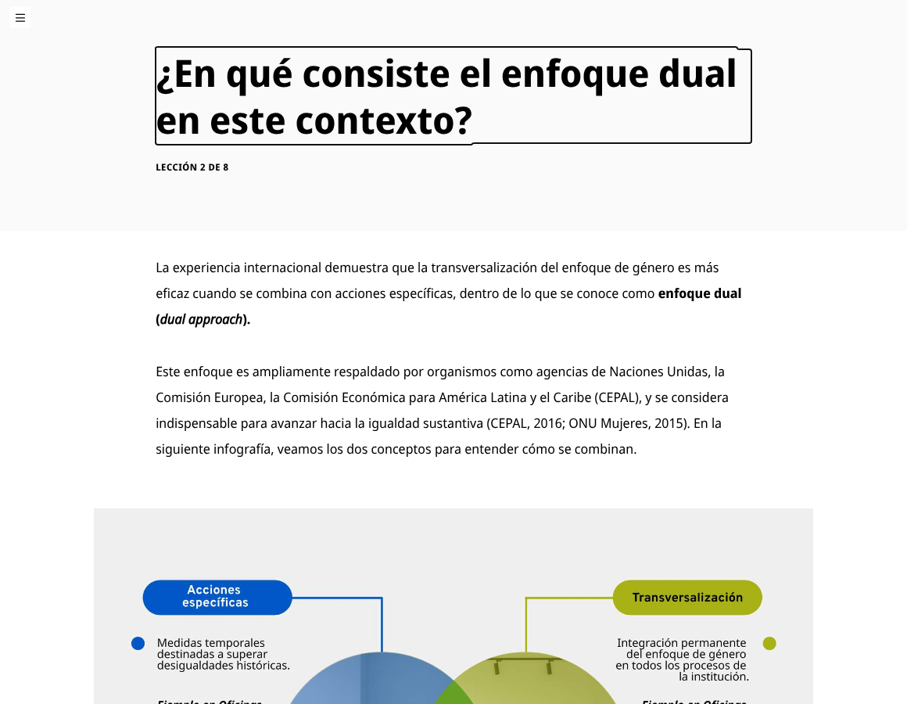
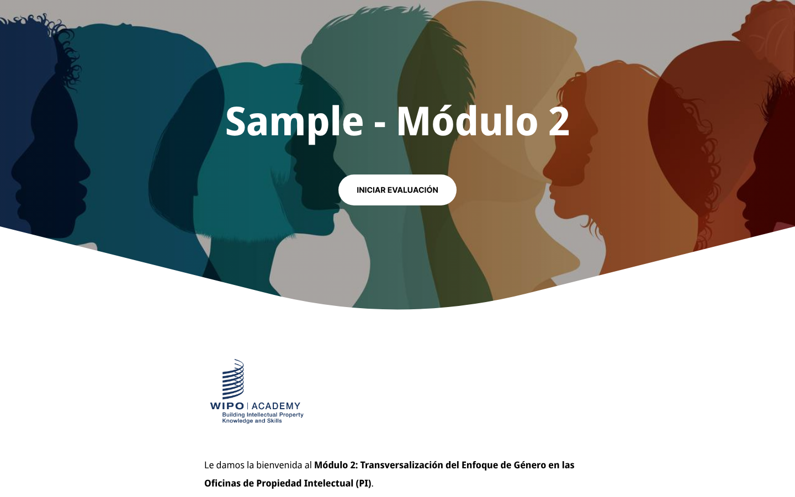
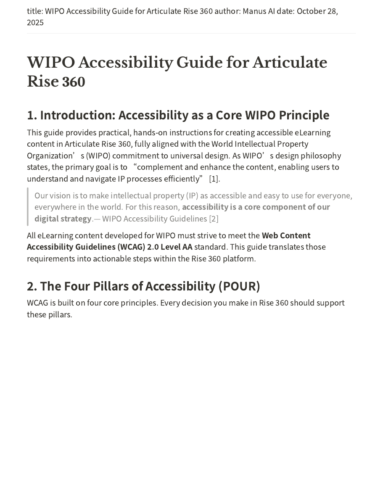
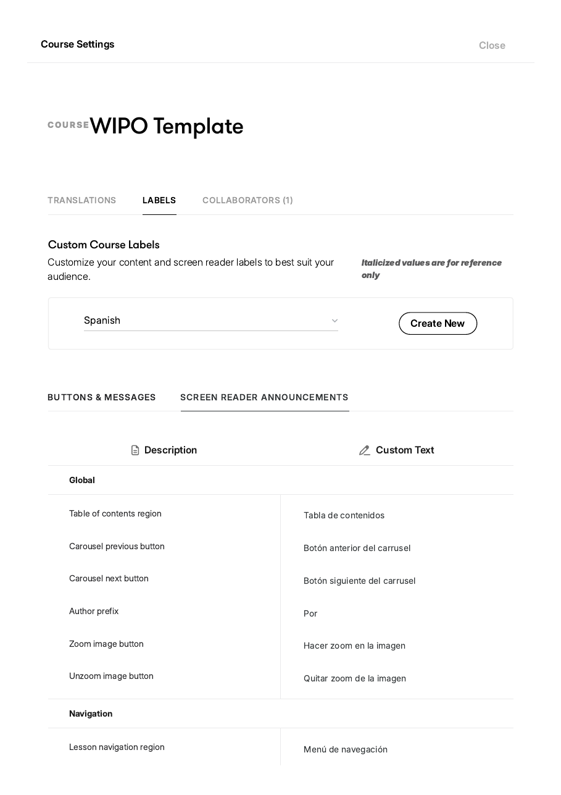
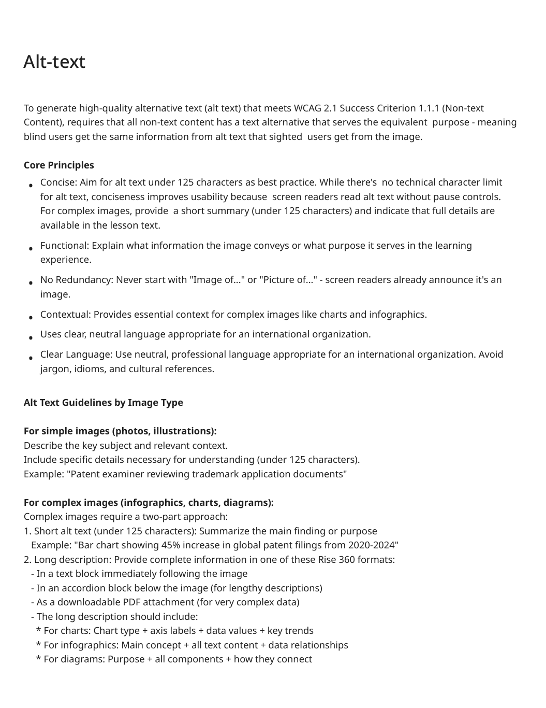
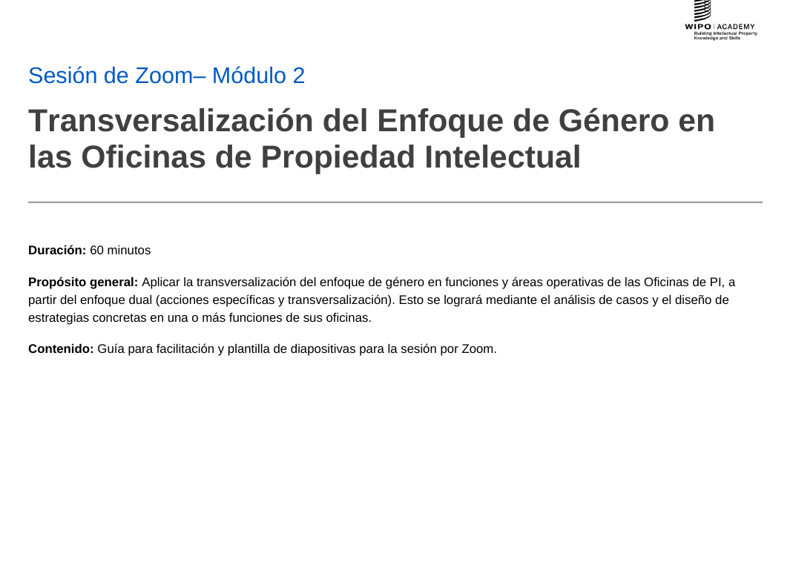
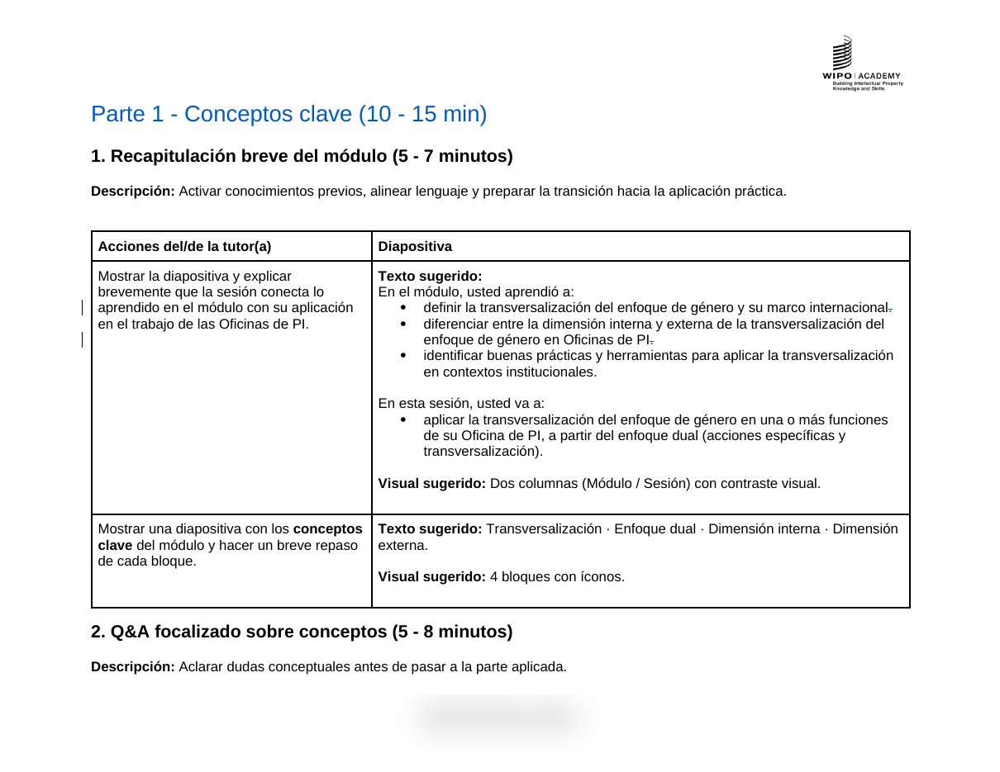

WIPO Academy · blended course

Writing guide (Spanish). Tone, register, inclusive language.

Editorial guide. Terminology, conventions, referencing.

Rise 360 template. Reusable layouts and elements.
UbD · transfer goal → outcome → evidence
| Transfer goal | Course outcome | Level |
|---|---|---|
| Recognise and address gender and intersectional bias in IP processes | Identify key gender biases, barriers and discriminatory practices in IP Offices | Analyse |
| Develop and implement a Gender Action Plan for their office | Develop a Gender Action Plan aligned with institutional objectives | Create |
| Advocate for inclusive, data-driven decisions | Analyse the internal and external dimensions of gender mainstreaming | Evaluate |
| Use gender-sensitive indicators to monitor and report | Apply gender-sensitive indicators to monitor and evaluate equality measures | Apply |
Module 2 · outcome → assessment evidence
| Intended outcome | Assessment | Type |
|---|---|---|
| Define gender mainstreaming | Auto-graded quiz and drag-and-drop definitions | Formative |
| Differentiate internal and external dimensions | Scenario classifying office actions as internal or external | Formative |
| Apply mainstreaming tools in office areas | Mini-case applying tools to one department (HR, examiners, outreach) | Performance |
| Apply across office functions | Zoom group exercise comparing departments; GAP continuation reflection | Transfer |
| All five outcomes | Final test: 10–15 items plus two short case scenarios | Summative |

Infographic spec. Dev note, alt text, caption, file names.

The built page. Same lesson in Rise 360, infographic in place.

Knowledge check. Question, options, feedback per answer.

Module home. Rise 360, Module 2.

Infographic. Dual approach, Module 2.

Explainer video. Powtoon with voiceover, Module 1.

Accessibility guide. WCAG 2.1 AA applied to Rise.

Screen-reader template. Spanish interface labels, tested.

Alt-text instructions. Text equivalents for every visual.

Facilitator kit. Purpose, timing, materials for the Zoom session.

Lesson plan. Facilitator actions beside the slide for each segment.